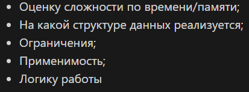
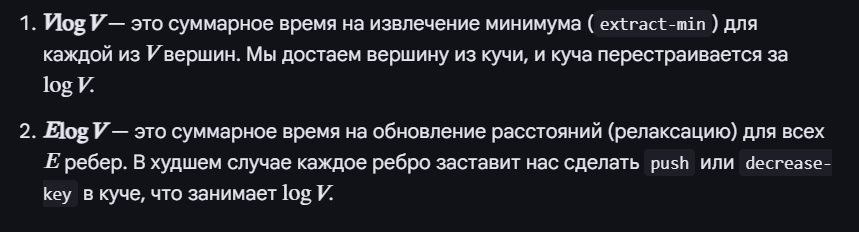
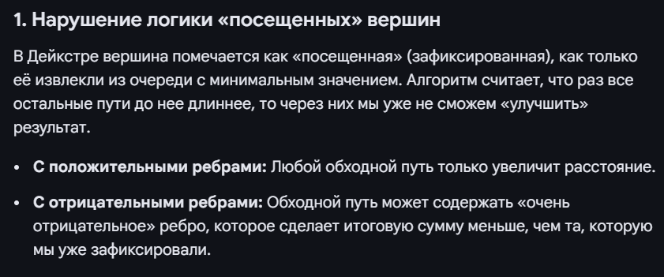
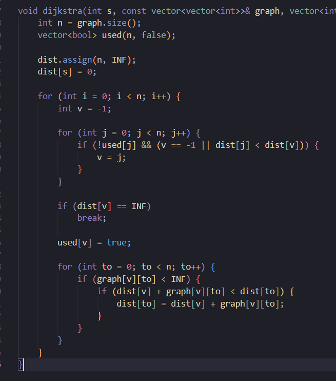
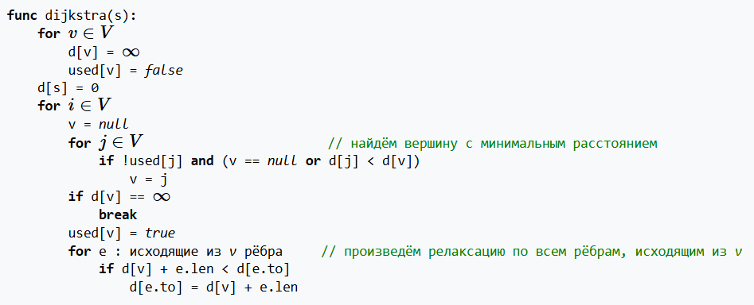
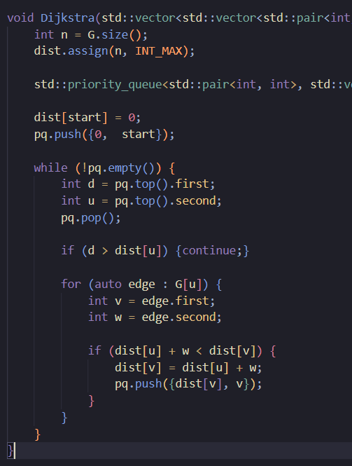
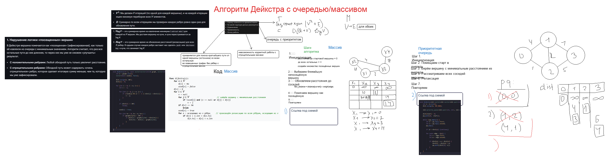

13. Алгоритм Дейкстры
Дейкстра, Беллман — Форд, Флойд — Уоршелл и выбор по типу графа.
Релаксация
Если путь до u найден, а ребро u → v весит w, обновляем d[v], когда d[u] + w меньше текущей оценки. Храните предка при улучшении для восстановления пути.
| Условия | Метод | Время |
|---|---|---|
| Все рёбра единичного веса | BFS | O(V + E) |
| Неотрицательные веса, одна стартовая вершина | Дейкстра | O(V² + E) с линейным выбором минимума, O((V + E) log V) с двоичной кучей на простом графе |
| Возможны отрицательные веса, один старт | Беллман — Форд | O(VE) |
| Нужны расстояния для всех пар | Флойд — Уоршелл | O(V³), память O(V²) |
Дейкстра
Начните с d[start] = 0, остальные оценки равны ∞. Извлекайте вершину с минимальной оценкой и релаксируйте исходящие рёбра. При неотрицательных весах итоговое расстояние до извлечённой вершины уже нельзя улучшить. В куче с повторными записями пропускайте пару, если её расстояние устарело.
Отрицательные рёбра
Беллман — Форд проходит по списку рёбер до V−1 раз. Улучшение на дополнительном проходе обнаруживает достижимый отрицательный цикл. Для вершин, до которых можно затем дойти из такого цикла, конечного кратчайшего расстояния нет.
У Флойда — Уоршелла внешний цикл перебирает разрешённую промежуточную вершину k. Переход d[i][j] = min(d[i][j], d[i][k] + d[k][j]) применяют только к конечным составляющим. Отрицательное значение d[v][v] сигнализирует об отрицательном цикле.
Материалы и примеры по пунктам
Алгоритм Дейкстра с очередью/массивом

для обоих


очередь с приоритетом
Шаги алгоритма
Массив
Приоритетная очередь
невозможность корректной работы с отрицательными весами
применяется для поиска кратчайшего пути от одной вершины (источника) ко всем остальным во взвешенных графах без рёбер с отрицательным весом.
1️⃣ Инициализация
Шаг 1. Инициализация
расстояние до стартовой вершины = 0
до всех остальных = ∞
Шаг 2. Помещаем старт в очередь
создаём множество посещённых вершин
Шаг 3. Берём вершину с минимальным расстоянием из очереди

Код
Массив
2️⃣ Выбираем ближайшую непосещённую вершину
Шаг 5. Рассматриваем всех соседей вершины

3️⃣ Обновляем расстояния до соседей
Шаг 6. Релаксация
Шаг 7. Повторяем
new_distance = distance[current] + weight(edge)
4️⃣ Помечаем вершину как посещённую
Открыть связанную визуализацию
5️⃣ Повторяем

Открыть связанную визуализацию
Схемы и рукописные примеры
